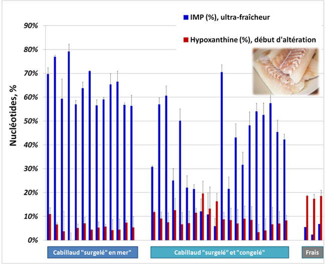
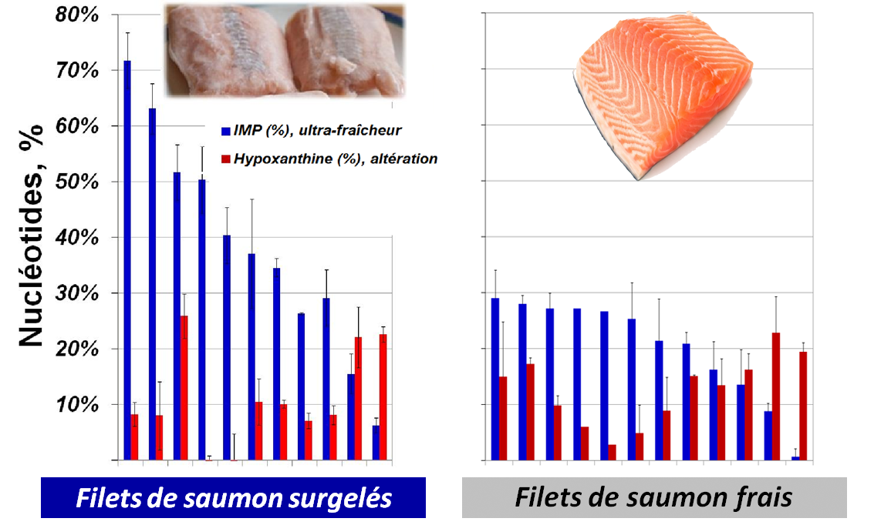
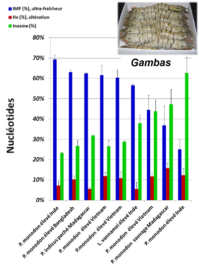
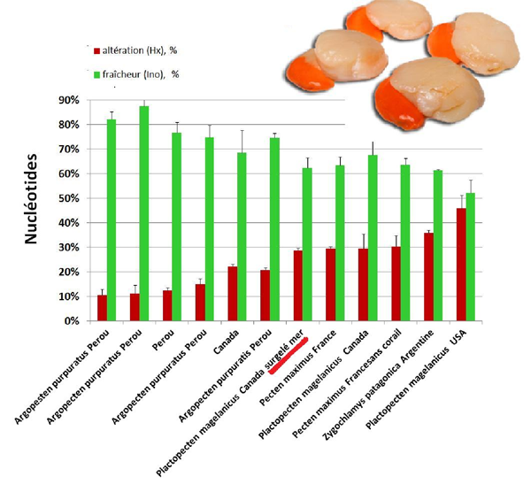
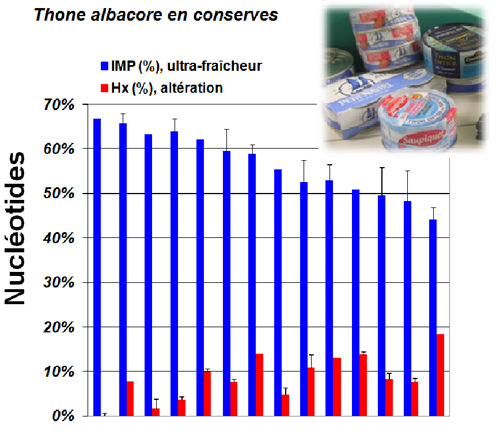

Mesurer les nucléotides pour garantir la fraîcheur
Quel type de produits? Téléchargement : | |||||||||||||||


Protocole de dosage simple et rapide:

Réglementation:
Aujourd'hui la mesure de nucléotides ne peut se substituer aux méthodes d'évaluation de la fraîcheur prévues par les règlements 853/2004 et 2074/2005 (évaluation organoleptique, ABVT). Cependant, le dosage de l'ABVT est difficilement interprétable pour des produits cuits ou ayant subi une transformation, poissons gras et poissons frais préemballés. Selon la note de service DGAL/SDSSA/N2013-8083 du 14 mai 2013 concernant la congélation des denrées alimentaires d'origine animale : "La congélation effectuée immédiatement après l'abattage limite la croissance des bactéries et par conséquent, la charge microbiologique lors de la décongélation... Cela suppose que la denrée doit être soumise à la congélation :
- "rapidement" pour les poissons dans les navires congélateurs
- "le plus rapidement possible" pour les produits de la pêche séparés mécaniquement. Il est par conséquent de la responsabilité de l'opérateur de congélation de veiller à la fraîcheur des denrées soumises à congélation".
Les nucléotides confirment l'ultra-fraîcheur de cabillaud "surgelé en mer" :
**Ki-value = 100x (Ino+Hx)/(IMP+Ino+Hx)= 100%- IMP content,% |
||||||||||||||||
 |
| Fraîcheur des filets de saumon A la différence du cabillaud, la dégradation de l'IMP est beaucoup plus lente dans la chair du saumon, une perte de 67% de l'IMP a été observée au bout de 2 semaines (Erikson U. et al 1997). Il a été alors proposé de fixer le seuil de rejet du saumon à 20-30% de teneur en IMP et de définir le saumon ayant une teneur en IMP >60% comme "excellent". Selon nos résultats, la teneur moyenne en IMP des filets de saumon vendus surgelés ou frais en France est de 38,7% et de 22,2%, respectivement (22 échantillons). |
 |
| Fraîcheur des gambas crues surgelées Selon de nombreuses publications, le processus de d�gradation de l'ATP dans la chair des crustac�s est proche de celui de poisson (Kalleda, R et al 2013, Goncalves et al 2003,�Jinag et Lee, 1988,�Konosu & Yamagushi 1998). Les crevettes tropicales (gambas) sont devenues tr�s populaires essentiellement du fait d�une d�mocratisation du prix suite � leur �levage en Asie, en Inde et en Am�rique du Sud. Comme les autres crevettes, les gambas sont des produits tr�s fragiles, notamment, � cause de la pr�sence de visc�res. Leur qualit�et la fra�cheur d�pendent des conditions de pêche, de la vitesse de refroidissement et de la dur�e de transport. La figure (� gauche) montre que 2 �chantillons de gambas sur 9 pr�lev�s dans le commerce pr�sentent une teneur en IMP de 36,9% et 25,1% (produit sauvage et marque "discount"), significativement en dessous de la moyenne de 53,3%. Ces r�sultats montrent �galement que, chez les crustac�s, l'inosine�pourrait constituer un meilleur indicateur de phases pr�coces d'alt�ration que l'hypoxanthine.
|
 |
| Fraîcheur des Noix de Saint Jacques surgelées: La chair des mollusques est dépourvue d'enzyme AMP-déaminase permettant la conversion rapide de l'AMP en IMP. Par conséquent, la dégradation de l'ATP passe non par la formation de l'IMP mais par celle de l'adénosine qui est dégradée en inosine, puis en hypoxanthine (Saito et al Nature 1958). Ainsi, pour les mollusques, l'accumulation de l'hypoxanthine est considérée comme indicateur de perte de la fraîcheur alors que le taux d'inosine indique la fraîcheur préservée. L'analyse de 12 échantillons de noix de Saint Jacques commercialisées surgelées a démontré que leur teneur en hypoxanthine varie de 10,5% à 45,9%. Contrairement aux résultats obtenus avec les cabillauds "surgelés à bord", les noix de Saint-Jacques "surgelées en mer" ne présente pas la fraîcheur exceptionnelle jugée par le taux d'hypoxanthine de 28.7%. |
 |
Conserves de thon albacore La cuisson inactive les enzymes de la chair et stoppe tous les processus de dégradation. Les nucléotides sont des composés résistants à la chaleur, ainsi, leurs taux reflètent la fraîcheur du thon lors de sa cuisson. Selon nos résultats, la teneur en IMP du thon albacore en boîte varie de 39,5% à 66,8%. Cet analyse permet de mettre en valeur des produits de haute gamme (IMP >60%) et aussi d'identifier les produits ayant un taux d'IMP <45-50% et, par conséquent, présentant le risque accru de la présence d'histamine.
|
 |